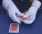
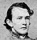

LISTEN
Enjoy this sampler platter of Lost Moon Radio audio tracks...


Track Descriptions:
Magic on the Radio -- Stephen the Illusionist performs his weekly installment of "Magic On The Radio" for Minnesota Public Radio. (Featuring Frank Smith. Recorded 2009.)
The Rhyming Song -- Children's entertainer Bug Stringfellow performs his beloved educational tune "The Rhyming Song." (Featuring Ryan Harrison. Recorded 2010.)
My Beloved Sarah -- Excerpt from the History Channel's award-winning epistolary examination of the Civil War. (Featuring Dan Oster and Frank Smith. Recorded live Sept. 2009.)
Water -- The innovative minds at Flovartis International bring you a revolutionary new product. (Featuring Ryan Harrison. Recorded 2010.)
Toddler Emergency -- Excerpt from the Toddler Emergency Hotline training video. (Featuring Lauren Flans, Frank Smith, Martha Marion, Ryan Harrison, and Dan Oster. Recorded live Sept. 2009.)
America, You Glorious Mess -- The Liberty Belles and Fellows perform their stirring rendition of this patriotic standard. (Featuring Jen Burton, Ross Craton, Brenton Kossak, Dan Mahoney, Martha Marion, Dan Oster, Rich Ramberg, Dylan Ris, Frank Smith, and Mikey Wells. Recorded live at the Hollywood Fringe Festival, June 2010.)